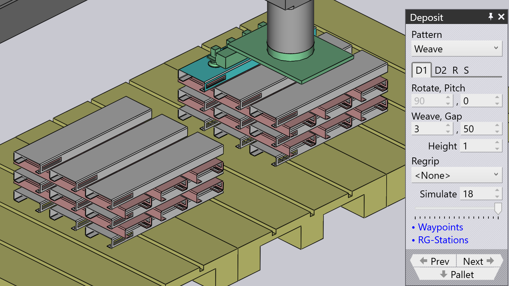
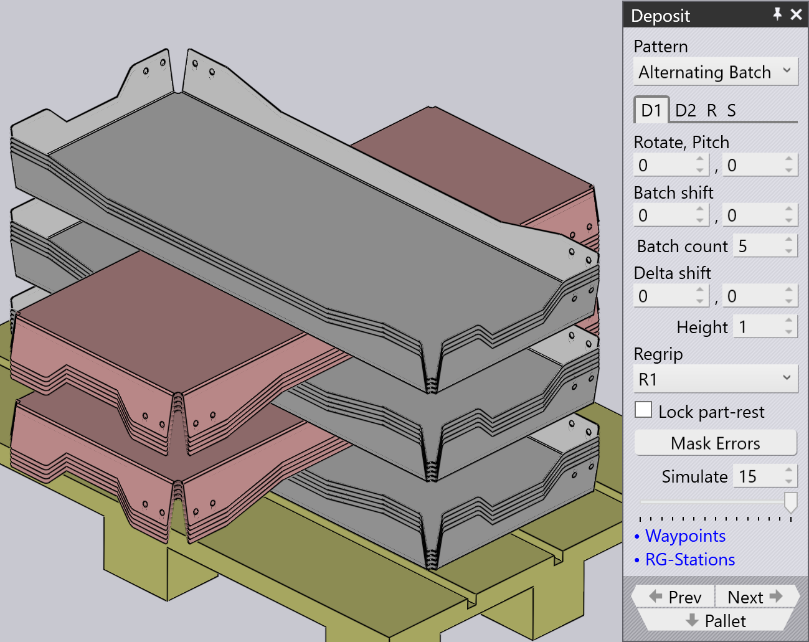

Deposit pattern types
Simple Grid
Simple Grid パターンは最も一般的に使用されるパターンで、パ レット上にパーツを長方形のグリッドで積み重ねます。
Simple Grid ポジションを使用する場合、デフォルトでは収納ポジ ション D1 のみが使用可能です。

Weave
Weave パターンは、細長いパーツに適しています。D2 レイヤー のパーツは、図に示すように D1 レイヤーのパーツから90°回転して配置されます。


-
Weave 設定は、ウィーブの各レイヤーで横に並べて積み重ねるパーツの数を制御しま す。
-
Gap は、ウィーブ内の各パーツ間の隙間です。
-
Repeat タブの Grid 設定を使用して、パレット上でウィーブスタック全体を複数回繰 り返すことができます。この例では、ウィーブスタックが2回繰り返されています（2 列、1行）。
-
Repeat タブの Gap (Z,X) 設定は、ウィーブを繰り返す際に使用さ れ、ウィーブレイヤー間のピッチを指定します。
Alternating
Alternating パターンは最も柔軟性があります。このパター ンでは、交互レイヤーごとに向き、反転、相対シフトを制御できます。
交互パターンは、より安定した、コンパクトなパーツの積み重ねを実現します。
交互パターンを使用する場合、収納ポジション D1 と D2、およびつかみ換え R1 がデフォルトで使用可能です。
| D1、D2 の Delta shift 値を調整し、 Regrip を追加してパーツ同士をロックします。 |

Alternating Batch
Alternating Batch パターンは交互パターンと似てい ますが、パーツをバッチおよび交互レイヤーで積み重ねることができます。
Batch shift は、バッチ内でZ軸およびX軸方向にパーツを 移動するために使用されます。
Batch count は、収納D1あたりのバッチごとのパーツ数を定義す るために使用されます。範囲は1～50です。以下の例では5に設定されています。
Delta shift は、バッチで構成される収納D1全体をZ軸およびX 軸方向に移動するために使用されます。


Repeat grid (R) タブの layers オプションを使用して、収納あ たりのバッチ数を定義します。以下の例では2に設定されています。

Drop to Basket
このパターンは、メカニカルグリッパーを使用して小さなパーツを回収バスケットに投入 するために使用されます。

Conveyor
Conveyor パターンは、パーツコンベア上にパーツを収納する ために使用されます。このオプションは、細長いパーツをコンベアに収納する際に不可欠 です。
| メカニカルジョーグリッパーが中型パーツに使用される場合、コンベアパターンを 除くすべてのパターンタイプは選択不可になります。 |

Inclined
Inclined パターンは、壁（またはサイドウォール付きのパ レット）に対してパーツを垂直に積み重ねるために使用されます。
| このパターンは常に使用できるとは限りません。これが実行可能であるためには、 パーツが十分な大きさである必要があります。小さなパーツの場合、ロボットは壁に対し てパーツを積み重ねるのに十分な低さまで到達できません。 |

Inclined pair
このパターンタイプは Alternating パターンと非常に似てい ますが、パーツがペアとして垂直に収納される点が異なります。
ペアを作成するために、D1 または D2 収納に追加の Regrip が導入されます。
Auto-pitch はスタックの傾斜角度を自動的に決定します。
Pitch 設定は積み重ねの傾斜角度を調整するために使用され、 Delta shift 値は X 軸および R 軸方向にパーツを移動し て、よりコンパクトなスタックを作成するために使用されます。


Manual
Manual パターンは、パーツの各レイヤーをわずかに異なる向き で配置するために使用されます。

-
Add ボタンを使用して、最上層の上に新しいパーツを追加します。
-
Dn タブの横にあるナビゲーション ボタ ンを使用して、前または次のレイヤーに移動します。
-
Delta shift、Rotate、および Pitch 設定を使用して、下のパーツの上にうまく収まるよう にパーツを調整できます。また、Delta shift を使用し、 Auto-pitch をクリックして、TecZone Bend に最適なピッチ 角度を計算させることもできます。
-
Remove ボタンを使用して、最上部のパーツを削除します。
-
マニュアルスタックを作成した後、Repeat タブ (R) の設定を使用して、パレット 全体に同じスタックを繰り返すことができます。上の画像は、列間の隙間が250 mmで 2列、1行で同じスタックが繰り返されている様子を示しています。
-
Sequence タブ (S) の設定を使用して、パーツを by layer で積み重ねる か by pile で積み重ねるかを制御できます。パイルごとの積み重ねを使用 する場合、2番目のパイルを開始する前に最初のパイルのすべてのパーツが完了しま す。